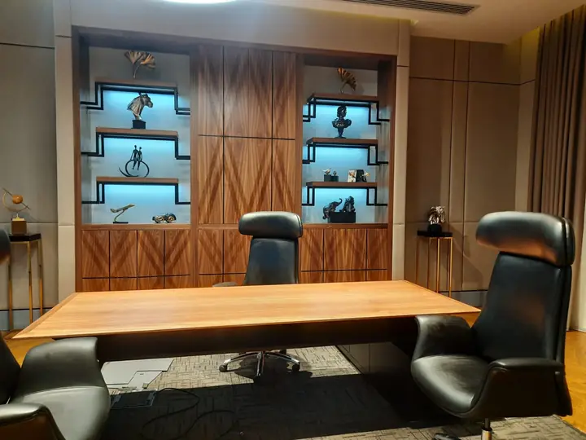
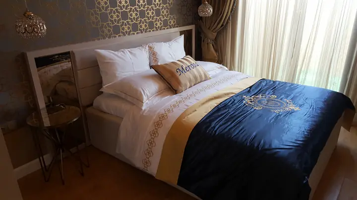
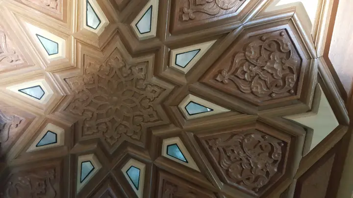
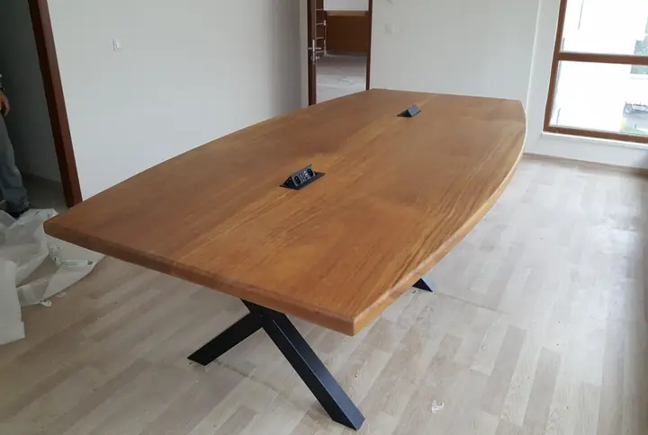

Проекты
Реализованные объекты и проекты, которые сейчас в проектировании, производстве или на монтаже.
Два референса: от Баку до Туркменистана
Две наши работы за рубежом, названные на этом сайте. Нажмите на карточку, чтобы открыть фотографии.

Головной офис в Баку
Кабинеты руководителей, открытые рабочие зоны, переговорные и стойка ресепшн. Книжные шкафы, стеллаж-перегородка в металлической раме и подсвеченные ниши изготовлены по индивидуальным размерам.
Смотреть фото (25)
Дворцовый проект в Туркменистане
Инкрустированные и резные двери и потолочные панели. Деревянные изделия с геометрическим орнаментом, сфотографированы в нашем цеху в процессе производства.
Смотреть фото (15)LUYA Projects: производство под ключ от отелей до вилл
Бригада за работой в номере отеля и в ресторане-кафе
Сцены сгенерированы искусственным интеллектом как иллюстрация; показанные люди — не наша команда.
Какими пространствами мы занимались
Каждая карточка фильтрует галерею по направлению. На странице направления описаны процесс и объём работ.

Отели
Мебель для спальни, зоны отдыха и ванной; деревянные стеновые панели, изголовья, шкафы и мини-бары.
Смотреть фото
Рестораны и кафе
Столы, стулья, кресла, барная стойка, стеллажи и лестница в зале со стеклянной кровлей; интерьер под ключ.
Смотреть фотоОфисы
Кабинеты руководителей, переговорные столы, открытые рабочие зоны, стойка ресепшн и лабораторная мебель.
Смотреть фото
Общественные объекты
Резные деревянные двери, минбар и окна для мечети; библиотечные стеллажи и книжное кафе; инкрустированные двери и потолочные панели для дворцового проекта.
Смотреть фото
Ритейл
Торговые стеллажи, полки и витрины для магазинов и шоурумов.
Смотреть фото
Жильё
Кухонные шкафы и мебель для ванных, спальни и детские, ТВ-зоны и стеновые панели, книжные шкафы, прихожие и гардеробные.
Смотреть фото
Изделия на заказ
Столы из слэба и эпоксидной смолы, деревянные и стальные двери.
Смотреть фотоРеализованные проекты
Смонтированы и сданы заказчику. Фильтруйте по сегменту; нажмите на фото, чтобы увеличить.
В этом сегменте пока нет опубликованных фотографий проектов.
Обсудим ваш проект
Присылайте всё, что есть: планировки, концепт-визуализации, номерной фонд. Вместе уточним объём работ, и мы вернёмся с дорожной картой и рамочным коммерческим предложением.